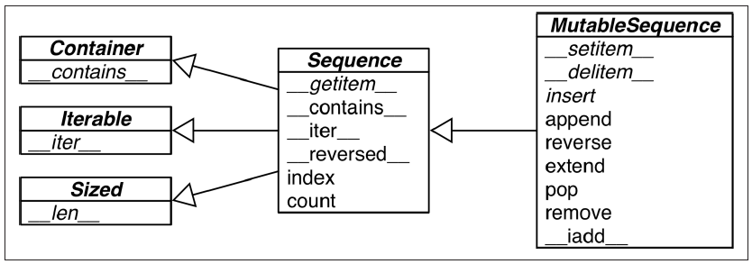

I'm just writing my understanding, or copying & pasting some segments from the book if those sentences are brief and meaningful themselves.
-
What is the so-called "Python data model"?
It's the way how python organizes data into objects. There're actually two ways for python to organize data, one is called "types and objects". Here's an excellent material about this topic.
In words, we can view there are 3 layers of objects that can be defined in python, called metaclass, class and "instances". Actually they are all objects. All classes (except a special one), including metaclasses, have a common root base class, which is the class
object, standing at the top of the second layer. The classobjectis the only one class that have no base classes, representing by the built-in attribute.__bases__.Each objects in python has its own mother, who instantiates it. This mother object is recorded in the built-in attribute
.__class__. Therefore all objects have non-empty.__class__attribute. Here comes a problem, who's the root mother, and the mother of this root? Python solve this problem by setting the root mothertypepointing itself, namelytype.__class__ is typeresults in aTrue.type, as a class, is actually a metaclass, which instantiate all classes by default. It's the only one default metaclass pre-defined in python. Now we have a interesting loop:typeis an instance of itself,typeas a class is a subclass ofobject, sotypeis an instance ofobject; on the other hand,objectas a class is instantiated by the metaclasstype, soobjectis an instance oftype.Notice that the class/metaclass
typeis a pre-defined object in python, it's not the one in the phrase "types and objects". For "types and objects", this "type" denotes "class", they are two equivalent concepts. A non-meta-class can instantiate objects, here we use the word "instances". Those instances are not allowed to further instantiate objects. That's why there're only 3 layers of objects: the root metaclasstypecreates itself (by definition) and all classes (which in the second layer), classes create instances, which in the last layer. A class is also called a type. There're many pre-defines types in python, such aslist,int,function, etc.As document says, every object has an identity, a type and a value. Its type, or class, is who creates it, recorded in
.__class__, and can be retrieved bytype(yourobject).One more thing to mention about types: all types(classes) are singletons. You cannot define two identical classes with same names.
type(yourobject)is actually a class creator, wheretypeis not a function but a class name. However the class created (here we can roughly use the word "returned") by this expression is exactly the one who createsyourobject.Another way to organize data is by protocols and interfaces. For example the descriptor protocol is only a protocol, or a set of interfaces, not a type in python. If an object has a method
__get__(self, obj, typ), then it can be called a descriptor, which does not mean the type of this object is "descriptor". Likewise, iterator and sequence are both protocols, corresponding tonext()and__getitem__()methods respectively.So in python we have an explicit taxonomy of data, called "types and objects", we can make use of it by subclassing. And also we have an implicit taxonomy, which is the protocol way, we can exploit by implementing the relevant interface methods. For instance we can implement a
__getitem__()method in order to have all the operations and properties of operator[], which is viewed as a sequence. -
Difference between
repr()andstr()In short,
repr()is nearer to the true form of objects, whilestr()is for display to end users.>>> print(repr('1'), repr(1)) ("'1'", '1') >>> print(str('1'), str(1)) ('1', '1')Usually we want to form the result of
repr()to be as a constructor, in other words if we runeval()with this result as the argument, it will result in a same object. -
Tips on sequence (Chapter 2)
-
Look at this neat diagram.
 Here names in italic are abstract classes and abstract methods.
-
List comprehensions used for Cartesian products
>>> tshirts = [(color, size) for color in colors for size in sizes]
-
Generator expressions
Just replace the brackets in listcomps by parentheses. Instead of lists, generator expressions result in generators.
-
Use the * to grab excess items
This is only available in Python 3.
>>> a, b, *rest = range(5) >>> a, b, rest (0, 1, [2, 3, 4]) >>> a, *body, c, d = range(5) >>> a, body, c, d (0, [1, 2], 3, 4)
-
Tuples are not just immutable lists
They can be used as records, and even named records with
collections.namedtuple. Use tuple unpacking to shorten your codes. -
"Tuple unpacking" is not only for tuples
Unpacking mechanism works with any iterable object. The corresponding byte code is
UNPACK_SEQUENCE. -
Slicing
The
__getitem__and__setitem__special methods that handle the[]operator simply receive the indices ina[i, j]as a tuple. In other words, to evaluatea[i, j], Python callsa.__getitem__((i, j)).Slicing can also be done in this multidimensional form, for instance
a[m:n, k:l].NumPy uses
...as a shortcut when slicing arrays of many dimensions; for example, ifxis a four-dimensional array,x[i, ...]is a shortcut forx[i, :, :, :,].The organization of mutable sequences is pretty loose. We can delete or modify a mutable sequence with almost any means:
>>> l = list(range(10)) >>> l [0, 1, 2, 3, 4, 5, 6, 7, 8, 9] >>> l[2:5] = [20, 30] >>> l [0, 1, 20, 30, 5, 6, 7, 8, 9] >>> del l[5:7] >>> l [0, 1, 20, 30, 5, 8, 9] >>> l[3::2] = [11, 22] >>> l [0, 1, 20, 11, 5, 22, 9]
-
In-place operation
+=and*=operators are of this kind. In both cases of normal and in-place assignment, it first evaluates the object being assigned, then assigns it to the name. The difference betweena=a+banda+=bhappens in the object. The former one will generate a new object of valuea+b, while the later will, if possible, operates the objects referred byadirectly, for instance executesa.extend(b).
-
-
How to understand python's tuple
Tuple is known as a container type, but in my understanding, we'd better not view it as a traditional "container". People say that a series of items concatenated by commas is actually a tuple, so just view it as with a pair of parentheses. But I'd rather think of any tuples as without parentheses. Tuple is not a traditional container, it's only a permutation of items. When you write it down, then it is fixed, because it's the permutation of those items you just wrote. You can access its elements using the
[]operator because python offers you this simple way to access, this is the special setting of tuple in python. But after all, you cannot assign any value to those items. This is obvious when you think of it as a permutation of fixed items. -
About python bytecode and other internals
Refer to this wonderful series of articles. There's also an article introducing some other internals. Bytecode seems to be quite low-level, but actually it's the opposite. The result highly depends on the low-level implementation. The 4th part of that series gives a nice example:
>>> def modulus(x, y): ... return x % y ... >>> [ord(b) for b in modulus.func_code.co_code] [124, 0, 0, 124, 1, 0, 22, 83] >>> dis.dis(modulus.func_code) 2 0 LOAD_FAST 0 (x) 3 LOAD_FAST 1 (y) 6 BINARY_MODULO 7 RETURN_VALUE >>> modulus(15,4) 3 >>> modulus("hello %s", "world") 'hello world'See, the key point is indeed the implementation of
BINARY_MODULO.There's a deeper article introducing bytecode from a reverse engineering viewpoint, in which only python binary file (ended with
pycorpyo) can be accessed. -
A Python API convention
Functions or methods that change an object in place should return
Noneto make it clear to the caller that the object itself was changed, no new object was created.sorted()function returns a new sorted iterable, whilelist.sort()is an in-place method. -
Binary search:
bisectUse
bisectfor binary search.bisect.bisectfor searching,bisect.insortfor inserting after searching. Here's a smart example in the book, notice that it uses binary search instead of a bunch ofif, augment the performance and shorten the code.>>> def grade(score, breakpoints=[60, 70, 80, 90], grades='FDCBA'): ... i = bisect.bisect(breakpoints, score) ... return grades[i] ... >>> [grade(score) for score in [33, 99, 77, 70, 89, 90, 100]] ['F', 'A', 'C', 'C', 'B', 'A', 'A']
-
The
memoryviewobject -
Alternatives of
listThere are quite a few data structures can somehow substitute
list. For examplearray.array,numpy.narray,collections.deque, and the moduleQueueincluding several classes for threaded programming and multiprocess programming. -
The
keyargumentThe
keyoptional argument of list.sort, sorted, max, and min is a great idea. Other languages force you to provide a two-argument comparison function like the deprecatedcmp(a, b)function in Python 2. Usingkeyis both simpler and more efficient. It’s simpler because you just define a one-argument function that retrieves or calculates whatever criterion you want to use to sort your objects; this is easier than writing a two-argument function to return –1, 0, 1. It is also more efficient because thekeyfunction is invoked only once per item, while the two-argument comparison is called every time the sorting algorithm needs to compare two items. Of course, Python also has to compare the keys while sorting, but that comparison is done in optimized C code and not in a Python function that you wrote.By the way, using
keyactually lets us sort a mixed bag of numbers and number-like strings. You just need to decide whether you want to treat all items as integers or strings:>>> l = [28, 14, '28', 5, '9', '1', 0, 6, '23', 19] >>> sorted(l, key=int) [0, '1', 5, 6, '9', 14, 19, '23', 28, '28'] >>> sorted(l, key=str) [0, '1', 14, 19, '23', 28, '28', 5, 6, '9']
-
Tips on dictionaries and sets (Chapter 3)
Comments
comments powered by Disqus